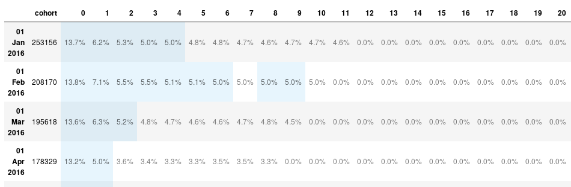

In this post, I'll have a look at bitmaps and how they can help us analyzing our users data. I'll also look at a python library that let us take advantage of bitmaps the easy way.
What is bitmap?
A bitmap, also called bit array, bit set, bit string or bit vector, is an array that stores bits. It is a mapping from a domain (mostly integers) to bits. A position in the array is called an offset.
A set of integers {1,2,3,4,5,6,7,8} could be map to the array [0,1,1,0,0,0,1,0].
Bit operations
We can manipulate the bits in a bitmap using the usual logical operators AND, OR, XOR, NOT.
-
set a bit to 1: 11101010 OR 00000100 = 11101110
-
set a bit to 0: 11101010 AND 11111101 = 11101000
-
test if a bit is set:
-
11101010 AND 0000001 = 0000000 (= 0 -> the bit is not set)
-
11101010 AND 00000010 = 00000010 (\(\neq\) 0 -> the bit is set)
-
toggle a bit
-
010 XOR 00000100 = 11101110
-
11101110 XOR 00000100 = 11101010
-
invert all bits
-
NOT 10110010 = 01001101
Redis implementation
There is no bitmap data structure in Redis. Bitmaps are stored as strings. However there are built-in functions to work with bitmaps.
To set a bit, we can use the SETBIT key offset value function.
> SETBIT foo 12 1
(integer) 0
> GET foo
"\x00\b"
Let's use an example with 8 bits: 11101010
For each offset where the value is one, we run the command SETBIT bitmap <offset> 1.
Our bit array is now stored with the key bitmap.
We can get the value of the bit at any offset with the GETBIT key offset command:
> GETBIT bitmap 2
(integer) 1
> GETBIT bitmap 4
(integer) 0
To know how many bits are set to 1, we can use the BITCOUNT key [start end] command:
> BITCOUNT bitmap
(integer) 5
Finally, we can do bit operations with BITOP operation destkey key [key...] where destkey is the destination key where the result is stored.
As an example, we are going to set two bitmaps and then find how many bits are set to 1 in both of them.
bitmap1:10011
bitmap2:01001
> SETBIT bitmap1 1 1
(integer) 0
> SETBIT bitmap1 4 1
(integer) 0
> SETBIT bitmap1 5 1
(integer) 0
> SETBIT bitmap2 2 1
(integer) 0
> SETBIT bitmap2 5 1
(integer) 0
> BITOP AND both bitmap1 bitmap2
(integer) 1
> BITCOUNT both
(integer) 1
Use in Analytics
Well, this looks nice, but what are we supposed to do with this?
Using bit operations on Redis is very fast. As a consequence, bitmaps are often used in real time analytics.
I'll show how it is used with an example. We are a SaaS business and we want to track our users activity. Each of our users is going to have a number as an id (1, 2, 3,...). We can use that id as the offset in the bitmap. The key in which we store the bitmap would be the activity we are tracking. For example, users' activity for March 1st will be stored in active:2019-03-01.
I have five users with ids going from 0 to 4. On March 1st, users 1 and 4 have been active. We record their activity by setting he bit at their offset to 1:
> SETBIT active:2019-03-01 1 1
(integer) 0
> SETBIT active:2019-03-01 4 1
(integer) 0
Our bitmap should look like this: 01001. Now if I want to get the number of active users for March 1st, I get the bit count for that day:
> BITCOUNT active:2019-03-01
(integer) 2
Two users were active that day.
If I want to know whether a user had been active on a given day, I just need to get the value of the bit at the offset that matches her id:
> GETBIT active:2019-03-01 2
(integer) 0
> GETBIT active:2019-03-01 4
(integer) 1
User 2 didn't connect on March 1st, whereas user 4 did.
Weekly Active Users (WAU)
We've been tracking the activity of our users for quite some times so we have bitmaps for every day. Now, we want to get the WAU which is the number of active users in a given week. A weekly active user is a user who has been active at least one day during the week we're interested in. We need to use the OR operator on activity on all days of that week. The command will look something like BITOP OR <destination_key> <monday_key> <tuesday_key>...<sunday_key>.
For this example, I'll show how to get the WAU for week 10 (March 4th to March 10th). I'll store the active users of the week in the active:2019-w10 key
> BITOP OR active:2019-w10 \
active:2019-03-04 \
active:2019-03-05 \
active:2019-03-06 \
active:2019-03-07 \
active:2019-03-08 \
active:2019-03-09 \
active:2019-03-10
I now have a bitmap for week 10 of 2019. If a user has been active at least once during that week, her bit is set to 1. To get the total number of active users for the week (WAU), I use the BITCOUNT command.
> BITCOUNT active:2019-w10
Retention
Let say we want the retention rate over two periods of time, period 1 and period 2:
So if we want to get the retention rate between week 10 and week 11, we first need to get the users who were active in both weeks. Assuming we've already aggregated our weekly data:
> BITOP AND active:w10+w11 active:w10 active:w11
The number of users active during both weeks is:
> BITCOUNT active:w10+w11
We just need to divide this number by the number of users active during week 10 (BITCOUNT active:w10) and we have our retention rate.
Note that the Redis CLI does not support arithmetic operations. I cannot type BITCOUNT active:w10+w11 / BITCOUNT active:w10.
Churn
The customer churn (also known as customer attrition) is simply the lost of customers.
As an example, we're going to say that a customer has churned if she's not active for three months, let's say Q2 of 2019. We are also going to take into account only the users that were active in Q1. Those who were not active in Q1 churned long ago. I'll assume that we already have aggregated our monthly data.
First, I get the users active during Q1:
> BITOP OR active:2019-Q1 \
active:2019-01 \
active:2019-02 \
active:2019:03
I do the same to get users active during Q2:
> BITOP OR active:2019-Q2 \
active:2019-04 \
active:2019-05 \
active:2019-06
Then, I invert all the bits of active:2019-Q2 to get users that were inactive:
> BITOP NOT inactive:2019-Q2 active:2019-Q2
Finaly, I find users that were active in Q1 AND inactive in Q2:
> BITOP AND churned:2019-Q2 \
active:2019-Q1 \
inactive:2019-Q2
> BITCOUNT churned:2019-Q2
We saw how we can do analytics with bitmaps, but using the Redis command line is not convenient. If we want to do some arithmetic, or generate nice reports, we will have to use another language.
For those using Python, there is the redis package that would let us interface with our Redis database. But there are also a python library and a server developed by the Doist team.
Doist applications
bitmapist-server
bitmapist-server is a standalone server developed by Doist to be used with their bitmapist library. Redis stores bitmaps in plain bytes arrays. This implementation can require a lot of memory when working with large sparse bitmaps. This can be the case if you're tracking users' activity. If you have millions of users but a small fraction of them is active on any given day, you will end up with a bitmap that as millions of bytes but only few of them are set to 1.
The bitmapist-server helps saving memory using two techniques:
- compressed bitmap representation.
- only keeping hot dataset in memory.
The Doist team claims that a dataset that would use 129.48G on redis only uses 300M on bitmapist-server.
bitmapist4
Bitmapist4 is a python library that let us easily manipulate bitmaps on Redis or bitmapist-server. It provides functions for easily saving events and aggregate automatically weekly and monthly data. It also has a cohort module that helps us run cohort analysis in only a few lines of code.
Setup
Run bitmapist-server
You can build the server from source following the instructions on github, but there's a Dockerfile in the repository and using containers is a lot easier. So we are going to create a bitmapist-server container and run it. If you don't have docker installed on your computer you can download it here for Mac and Windows. For linux, instructions can be found on https://docs.docker.com/install/linux/docker-ce/
Build the docker image:
$ git clone https://github.com/Doist/bitmapist-server.git
$ cd bitmapist-server
$ docker build -t bitmapist-server:latest ./
Run the container:
$ docker container run -d -p 6379:6379 --name bitmapist-server bitmapist-server
Control that the container is running
$ docker container ps
CONTAINER ID IMAGE COMMAND CREATED STATUS PORTS NAMES
8fc1ab9d39f1 bitmapist-server "./bitmapist-server …" 20 hours ago Up 5 minutes 0.0.0.0:6379->6379/tcp bitmapist-server
Install bitmapist4
To install the bitmapist4 library, simply type the following command.
$ pip install bitmapist4
Dataset
For this tutorial, I use the dataset from the WSDM - KKBox's Churn Prediction Challenge competition hosted on kaggle. It can be downloaded here.
This is a good dataset because it contains the logs of the users' activity. I will use the members_v3.csv and user_logs.csv files.
The data descriptions given by Kaggle are as follow:
members.csv
This is the users' information. Note that not every user in the dataset is available.
- msno
- city
- bd: age.
- gender
- registered_via: registration method
- registration_init_time: format
%Y%m%d - expiration_date: format
%Y%m%d, taken as a snapshot at which the member.csv is extracted. Not representing the actual churn behavior.
Let's have a look at the first lines:
$ head -n 5 members_v3.csv
msno,city,bd,gender,registered_via,registration_init_time
Rb9UwLQTrxzBVwCB6+bCcSQWZ9JiNLC9dXtM1oEsZA8=,1,0,,11,20110911
+tJonkh+O1CA796Fm5X60UMOtB6POHAwPjbTRVl/EuU=,1,0,,7,20110914
cV358ssn7a0f7jZOwGNWS07wCKVqxyiImJUX6xcIwKw=,1,0,,11,20110915
9bzDeJP6sQodK73K5CBlJ6fgIQzPeLnRl0p5B77XP+g=,1,0,,11,20110915
msno is the id of the user. This is a string, however, we need integers to save data in bitmaps as the id is going to be the offset at which we save the user's bit. We'll ignore city, bd and gender to keep things simple.
Let's control how many lines the file has:
$ wc -l members_v3.csv
6769474 members_v3.csv
The file has a little bit less than 6.8 million lines.
user_logs.csv
Those are the daily user logs describing listening behavior of a user. The data has been collected until 2/28/2017.
- msno: user id
- date: format
%Y%m%d - num_25: # of songs played less than 25% of the song length
- num_50: # of songs played between 25% to 50% of the song length
- num_75: # of songs played between 50% to 75% of of the song length
- num_985: # of songs played between 75% to 98.5% of the song length
- num_100: # of songs played over 98.5% of the song length
- num_unq: # of unique songs played
- total_secs: total seconds played
Let's have a look at the first lines
$ head -n 5 user_logs.csv
msno,date,num_25,num_50,num_75,num_985,num_100,num_unq,total_secs
rxIP2f2aN0rYNp+toI0Obt/N/FYQX8hcO1fTmmy2h34=,20150513,0,0,0,0,1,1,280.3350
rxIP2f2aN0rYNp+toI0Obt/N/FYQX8hcO1fTmmy2h34=,20150709,9,1,0,0,7,11,1658.9480
yxiEWwE9VR5utpUecLxVdQ5B7NysUPfrNtGINaM2zA8=,20150105,3,3,0,0,68,36,17364.9560
yxiEWwE9VR5utpUecLxVdQ5B7NysUPfrNtGINaM2zA8=,20150306,1,0,1,1,97,27,24667.3170
Each line represents the activity of a user on a given day. In the following examples, I will ignore the information related to the number of songs played or the duration of the session. I will only record whether on a given day a user had been active, i.e. for each line, I will set the user's bit to 1 for that day. For example, the first line will be saved in active:2015-05-13.
Let's control how many lines the file has.
$ wc -l user_logs.csv
47375490 user_logs.csv
The user_logs.csv file has over 47 millions lines.
Loading the data
Before starting working on analytics, we need to save the data from the csv files into the bitmapist-server. I have two issues to deal with:
- The users ids are strings but I need an integer because the id is the offset in the bitmap array.
- I can't load the entire logs at once because my computer doesn't have enough memory.
So here is how I am going to proceed:
- Save data from the
members_v3.csvfile.
There are no duplicate users (msno). For each line, I can assign an integer to the msno and save the pair in a dictionary. Then, I increment the integer before the next line. I will have an integer id for each user that I can use to mark an event.
For each line, I will mark two events: the date of registration (registration_init_time) and the registration method (registered_via). I can use the transaction() method to take advantage of Redis pipelining.
members_file = '../data/members_v3.csv'
id_dict = {}
with open(members_file, 'r') as file:
next(file) # skip the headers
reader = csv.reader(file)
for id_int, row in enumerate(reader):
print(row)
# add the user id to the id dictionary
id_dict[str(row[0])] = str(id_int)
with b.transaction():
# save registration date for cohort analysis
b.mark_event('registered',
str(id_dict[str(row[0])]),
datetime.strptime(str(row[5]), '%Y%m%d'))
# save registration method
b.mark_unique(f'registered_via:{row[4]}',
str(id_dict[str(row[0])]))
-
I iterate through the
user_logs.csvfile and mark anactiveevent for each line.Because the dataset is quite large and I don't need all the data, I'll load only the rows for 2016.
log_file = '../data/user_logs.csv'
with open(log_file, 'r') as file:
reader = csv.reader(file)
for row in reader:
# we keep only the logs of users in members dataset and logs for 2016
if row[0] in id_dict.keys() and row[1][:4] == '2016':
b.mark_event('active',
id_dict[row[0]],
datetime.strptime(row[1], '%Y%m%d'))
b.mark_event() and b.unique()
The interesting part in the loading script are the mark_event() and mark_unique() methods. Let's see what they do.
b is an instance of the Bitmapist class.
import bitmapist4
b = bitmapist4.Bitmapist(prefix_key='kkbox__')
The prefix key is a string that will be added to the redis key. The default value is bitmapist_, but if you want to track multiple applications, you could differentiate them with the prefix.
mark_event()
The mark_event() method let us record that an event has happened at a certain time. It takes the following arguments:
event_name(string): the name of the event you are recording (e.g. 'active')uuid(integer): the id of the user.timestamp(datetime): the time at which the event happened. If ignored, it will be marked now in UTC timezone (datetime.datetime.utcnow()).track_hourly(boolean): the default is False, but you can set it to True if you want to track hourly events.track_unique(boolean): set to True if you want to also mark the unique event. For example, you want to track usage of a feature. Every time someone used that feature, you will mark the event at the day the feature was used (e.g. set the bit to 1 for id 123 for keyfeature_used:2019-03-01). That way, you can track who used the feature on any given day. But you may also want to know who ever used this feature. This data is not time specific. In this case, you settrack_uniquetoTrueand the event is also recorded without the timestamp (e.g. set the bit to 1 for id 123 for keyfeature_used)
When you mark an event with a timestamp, Bitmapist will automatically save the event for the month, week and day. Which mean that you don't have to aggregate the data later using bit operations.
mark_unique()
The mark_unique() method only takes the event_name and uuid arguments. It is used to save events for which the time is not important. In our example, I marked the registration method as a unique event because all I want to know is how the user registered, I don't care about the date (it was saved with the registered event).
Analytics
Now that our data is saved in our bitmapist server, we can start the fun part: data analysis!
Users Activity
Daily Active Users (DAU)
I can get the number of users active on any given day using DayEvents() with the active event name.
There are two ways to extract the information for a specific date:
# set up the date to April 3rd, 2016
date = datetime.datetime(2016, 4, 3)
# method one
dau = b.DayEvents('active', 2016, 4, 3)
count = len(dau)
print(f'There were {count:,} users active on April 3rd, 2016.')
# method two
dau = b.DayEvents.from_date('active', date)
count = len(dau)
print(f'There were {count:,} users active on April 3rd, 2016.')
There were 62,507 users active on April 3rd, 2016.
There were 62,507 users active on April 3rd, 2016.
Weekly Active User (WAU)
The same way I could extract the number of users active on a given day, I can also extract the users active on a specific week. Remember that when we marked the event, bitmapist automatically saved the weekly and monthly data. So I just have to use WeekEvents() with the active event name.
wau = b.WeekEvents('active', 2016, 14) # 14 is the week number
count = len(wau)
The WeekEvents class takes a year and a week arguments. If you don't have the week number, you can use the from_date() classmethod instead of extracting the week number from the date by yourself:
wau = b.WeekEvents.from_date('active', date)
count = len(wau)
print(f'There were {count:,} users active on week 13 of 2016.')
There were 156,759 users active on week 13 of 2016.
If we don't provide the date, bitmapist will return the data for now. That means we would have live data about how many users were active today, this week, this month, ...
Retention
As we saw earlier, the retention is the percentage of users active during a period and that were also active the following one. In the example I used, we looked at the retention rate between week 10 and 11. Let's see how we could get this information with bitmapist:
active_w10 = b.WeekEvents('active', 2016, 10)
active_W10_w11 = active_w10 & b.WeekEvents('active', 2016, 11)
retention = len(active_W10_w11) / len(active_w10)
print(f'{retention * 100:.0f}% of users active in week 10 were still active in week 11.')
47% of users active in week 10 were still active in week 11.
To get the number of users active both week, I used the & operator. Bitmapist let us use such operators to compare or combine bitmaps. Let's have a look.
Bit operations
NOT (~)
# Not active in January
jan_inactives = ~b.MonthEvents('active', 2016, 1)
print(f'{len(jan_inactives):,} users were not active in January 2016.')
6,360,354 users were not active in January 2016.
AND (&)
# active in both January and February
jan_and_feb = b.MonthEvents('active', 2016, 1) & b.MonthEvents('active', 2016, 2)
print(f'{len(jan_and_feb):,} users were active in January and February 2016.')
127,278 users were active in January and February 2016.
We can also combine operators.
# active one month but not the following one
jan_not_feb = b.MonthEvents('active', 2016, 1) & ~b.MonthEvents('active', 2016, 2)
print(f'{len(jan_not_feb):,} users were active in January 2016 but not active in February.')
281,840 users were active in January 2016 but not active in February.
OR (|)
We don't have quarters data in Bitmapist. We can use the OR operator to aggregate it ourselves:
# active in quarter 1
actives_q1 = b.MonthEvents('active', 2016, 1) | \
b.MonthEvents('active', 2016, 2) | \
b.MonthEvents('active', 2016, 3)
print(f'{len(actives_q1):,} users were active during the first quarter of 2016.')
810,499 users were active during the first quarter of 2016.
Churn
Let's look now at how bitmapist can help us get the churn between Q1 and Q2. The active users in Q1 are all the users that were active during one the three months of the quarter. I'll use the | (OR) operator. I also need to know which users were not active during the second quarter. Those are the users who were not active in any month of the quarter. I'll use the ~ (NOT) operator to get the inactive users of each month and the & (AND) operator to aggregate the three months activity.
actives_q1 = b.MonthEvents('active', 2016, 1) | \
b.MonthEvents('active', 2016, 2) | \
b.MonthEvents('active', 2016, 3)
inactives_q2 = ~b.MonthEvents('active', 2016, 4) & \
~b.MonthEvents('active', 2016, 5) & \
~b.MonthEvents('active', 2016, 6)
churn_q2 = actives_q1 & inactives_q2
print(f'{len(churn_q2):,} users churned in the second quarter.')
210,409 users churned in the second quarter.
Cohort analysis
Bitmapist also has a cohort module that does all the heavy work for us.
First, I get ready...
import numpy as np
from datetime import datetime
import matplotlib.pyplot as plt
from bitmapist4 import Bitmapist, cohort
b = Bitmapist(key_prefix='kkbox_')
Then I get my cohort table. The cohort module has a get_cohort_table() method.
We need to provide the cohort and the activity. The cohort is how we group the users (e.g. registration date) and the activity is what we are tracking (e.g. the active event).
table_pct = cohort.get_cohort_table(b.MonthEvents('registered'),
b.MonthEvents('active'),
rows = 39)
table_pct
CohortTable([
CohortRow('01 Jan 2016', 253156, [13.738564363475485, 6.1945993774589585, 5.25328256095056, 5.003239109481901, 5.020619696945757, 4.761490938393718, 4.838123528575266, 4.733444990440677, 4.597955410892888, 4.7117192561108565, 4.7373951239551895, 4.634691652577857, 0.0, 0.0, 0.0, 0.0, 0.0, 0.0, 0.0, 0.0, 0.0, 0.0, 0.0, 0.0, 0.0, 0.0, 0.0, 0.0, 0.0, 0.0, 0.0, 0.0, 0.0, 0.0, 0.0, 0.0, 0.0, 0.0, 0.0]),
CohortRow('01 Feb 2016', 208170, [13.772877936302061, 7.072104529951482, 5.54834990632656, 5.474852284190805, 5.145794302733343, 5.092472498438776, 5.010328097228227, 4.960368929240524, 5.049718979680069, 5.022337512609886, 4.959888552625258, 0.0, 0.0, 0.0, 0.0, 0.0, 0.0, 0.0, 0.0, 0.0, 0.0, 0.0, 0.0, 0.0, 0.0, 0.0, 0.0, 0.0, 0.0, 0.0, 0.0, 0.0, 0.0, 0.0, 0.0, 0.0, 0.0, 0.0]),
CohortRow('01 Mar 2016', 195618, [13.599464261979982, 6.271406516782709, 5.1667024506947214, 4.843623797401057, 4.732693310431555, 4.630453230275332, 4.580866791399565, 4.66572605792923, 4.756208528867487, 4.539970759337075, 0.0, 0.0, 0.0, 0.0, 0.0, 0.0, 0.0, 0.0, 0.0, 0.0, 0.0, 0.0, 0.0, 0.0, 0.0, 0.0, 0.0, 0.0, 0.0, 0.0, 0.0, 0.0, 0.0, 0.0, 0.0, 0.0, 0.0]),
...
CohortRow('01 Jan 2019', 0, [0, 0, 0]),
CohortRow('01 Feb 2019', 0, [0, 0]),
CohortRow('01 Mar 2019', 0, [0])])
I am just showing the first and last three rows. The nrows arguments set how many rows the table has. We can see that the last row of the table is March 2019. This is the time at which the table starts. So if I want to make a cohort analysis on my data, I need to set row=39 so that the table has enough rows to include the 2016 cohorts.
The data is not easy to read. We can convert it into a DataFrame using the df() method. I also keep only the useful rows using .iloc[:12].
df = table_pct.df().iloc[:12]
df.head(3)
| cohort | 0 | 1 | 2 | 3 | 4 | 5 | 6 | 7 | 8 | ... | 29 | 30 | 31 | 32 | 33 | 34 | 35 | 36 | 37 | 38 | |
|---|---|---|---|---|---|---|---|---|---|---|---|---|---|---|---|---|---|---|---|---|---|
| 01 Jan 2016 | 253156 | 13.738564 | 6.194599 | 5.253283 | 5.003239 | 5.020620 | 4.761491 | 4.838124 | 4.733445 | 4.597955 | ... | 0.0 | 0.0 | 0.0 | 0.0 | 0.0 | 0.0 | 0.0 | 0.0 | 0.0 | 0.0 |
| 01 Feb 2016 | 208170 | 13.772878 | 7.072105 | 5.548350 | 5.474852 | 5.145794 | 5.092472 | 5.010328 | 4.960369 | 5.049719 | ... | 0.0 | 0.0 | 0.0 | 0.0 | 0.0 | 0.0 | 0.0 | 0.0 | 0.0 | NaN |
| 01 Mar 2016 | 195618 | 13.599464 | 6.271407 | 5.166702 | 4.843624 | 4.732693 | 4.630453 | 4.580867 | 4.665726 | 4.756209 | ... | 0.0 | 0.0 | 0.0 | 0.0 | 0.0 | 0.0 | 0.0 | 0.0 | NaN | NaN |
That's better, but what do those numbers mean?
The index identify the cohort. The first row is for the users who registered in January 2016. The cohort column gives us the size of the cohort (i.e. how many users registered that month):
# registered in January
january = b.MonthEvents('registered', 2016, 1)
print(f'{len(january):,} users registered in January')
253,156 users registered in January
The following columns give us the percentage of users from that cohort who are active for this period. For the January cohort, 0 is January, 1 is February and so on. For the February cohort, 0 is February, 1 is March, ... :
# how many users were active in January
active_jan = january & b.MonthEvents('active', year=2016, month=1)
active_jan_num = len(active_jan)
active_jan_pct = active_jan_num * 100 / len(january)
print(f'{active_jan_num:,} of those users were active the same month. That is {active_jan_pct:.6f} percents.')
34,780 of those users were active the same month. That is 13.738564 percents.
This 13.738564 percents is the number we can read in the column 1 of the January cohort row.:
| cohort | 0 | 1 |
|---|---|---|
| 01 Jan 2016 | 253156 | 13.738564 |
If you need users count instead of percentages, you can set the user_percent parameter to False.
table_cnt = cohort.get_cohort_table(b.MonthEvents('registered'),
b.MonthEvents('active'),
rows = 39,
use_percent=False)
table_cnt.df().head(3)
| cohort | 0 | 1 | 2 | 3 | 4 | 5 | 6 | 7 | 8 | ... | 29 | 30 | 31 | 32 | 33 | 34 | 35 | 36 | 37 | 38 | |
|---|---|---|---|---|---|---|---|---|---|---|---|---|---|---|---|---|---|---|---|---|---|
| 01 Jan 2016 | 253156 | 34780 | 15682.0 | 13299.0 | 12666.0 | 12710.0 | 12054.0 | 12248.0 | 11983.0 | 11640.0 | ... | 0.0 | 0.0 | 0.0 | 0.0 | 0.0 | 0.0 | 0.0 | 0.0 | 0.0 | 0.0 |
| 01 Feb 2016 | 208170 | 28671 | 14722.0 | 11550.0 | 11397.0 | 10712.0 | 10601.0 | 10430.0 | 10326.0 | 10512.0 | ... | 0.0 | 0.0 | 0.0 | 0.0 | 0.0 | 0.0 | 0.0 | 0.0 | 0.0 | NaN |
| 01 Mar 2016 | 195618 | 26603 | 12268.0 | 10107.0 | 9475.0 | 9258.0 | 9058.0 | 8961.0 | 9127.0 | 9304.0 | ... | 0.0 | 0.0 | 0.0 | 0.0 | 0.0 | 0.0 | 0.0 | 0.0 | NaN | NaN |
We can improve the display further using the stylize() method. It will format the percentages correctly and highlight some data.
cohort.stylize(df)

Visualize our cohorts
Now that our cohort data is stored in a dataframe, it is easy to create visualizations from it.
Cohort heatmap
months = [datetime(1900,m,1).strftime('%b') for m in range(1,13)]
fig, ax = plt.subplots(figsize=(8,8))
im = ax.imshow(cohorts.iloc[:,1:13], cmap='Blues')
ax.set_xticks(range(12))
ax.set_yticks(range(len(months)))
ax.set_xticklabels(np.arange(cohorts.shape[1]))
ax.set_yticklabels(months)
for i in range(12):
for j in range(12):
value = cohorts.iloc[i, j+1]
color = 'w' if value > 3 else 'dimgrey'
text = ax.text(j, i, f'{value:.1f}',
ha="center", va="center", color=color)
ax.spines['top'].set_visible(False)
ax.spines['bottom'].set_visible(False)
ax.spines['right'].set_visible(False)
ax.spines['left'].set_visible(False)
ax.set_xlabel('months')
ax.set_ylabel('cohorts')
ax.set_title('Cohort Analysis for 2016')
fig.tight_layout()
plt.show()

Cohorts Plots
fig, ax = plt.subplots(figsize=(10,6))
x = range(12)
for c in range(12):
y = cohorts.iloc[c, 1:]
ax.plot(x, y, label=months[c])
ax.set_xticks(x)
ax.spines['top'].set_visible(False)
ax.spines['right'].set_visible(False)
ax.legend()
ax.set_xlabel('months')
ax.set_ylabel('% of active users')
ax.set_title('Cohort Analysis for 2016')
fig.tight_layout()
plt.show()

Registration methods cohorts
We are now going to use bitmapist to run a cohort analysis where we group users by registration method. We want to know what method has the highest user retention.
First, I need to get all the registration methods. Bitmapist has a method to extract all the events that have been saved: get_event_names(). The registration method was saved as a unique event. Getting all the events names will give me the registration methods.
b.get_event_names()
['active',
'registered',
'registered_via:-1',
'registered_via:1',
'registered_via:10',
'registered_via:11',
'registered_via:13',
'registered_via:14',
'registered_via:16',
'registered_via:17',
'registered_via:18',
'registered_via:19',
'registered_via:2',
'registered_via:3',
'registered_via:4',
'registered_via:5',
'registered_via:6',
'registered_via:7',
'registered_via:8',
'registered_via:9']
All I have to do now is extract the number from the registered_via:# events.
registration_methods = [m.split(':')[1] for m in b.get_event_names() if ':' in m]
['-1',
'1',
'10',
'11',
'13',
'14',
'16',
'17',
'18',
'19',
'2',
'3',
'4',
'5',
'6',
'7',
'8',
'9']
Next, as I only saved the activity data for 2016, I am only going to consider the users who registered in 2016. I create a base_users bitmap:
base_users = b.YearEvent('registered', 2016)
Before going further, I want to have a look at how many user used each method to register.
users_count = [len(b.UniqueEvents(f'registered_via:{m}') & base_users) for m in registration_methods]
df = pd.DataFrame({'methods':registration_methods,
'users_count':users_count}).sort_values('users_count', ascending=False)
df.plot.bar(x='methods')

I used the AND operator to limit the registrations to 2016 : b.UniqueEvents(f'registered_via:{m}') & base_users.
Most users registered via method 4. After that, some users registered via methods 7, 9, 3. I will ignore the other methods in the following analysis.
# I create a matrix where I'll store the data that
# I'll use later to generate a dataframe
matrix = []
# I'll add one row per method to the matrix.
for method in [3, 4, 7, 9]:
# The first element of the row is the name of the cohort.
# Here, I use the registration method.
row = [method]
# The next element is the number of users who registered
# using this method in 2016.
users = b.UniqueEvents(f'registered_via:{method}') & base_users
row.append(len(users))
# The following cells are the percentage of users that are active
# n months after their registration, n being the period.
for period in range(12):
actives = sum(len(users &
b.MonthEvents('registered', 2016, month) &
b.MonthEvents('active', 2016, month + period)) for month in range(1, 13))
pct_active = actives * 100 / row[1] if actives != 0 else 0
row.append(pct_active)
matrix.append(row)
columns = ['method', 'users_count'] + list(range(12))
df = pd.DataFrame(matrix, columns=columns)
df
| method | users_count | 0 | 1 | 2 | 3 | 4 | 5 | 6 | 7 | 8 | 9 | 10 | 11 | |
|---|---|---|---|---|---|---|---|---|---|---|---|---|---|---|
| 0 | 3 | 84791 | 14.572301 | 8.024437 | 5.762404 | 4.823625 | 4.213891 | 3.515703 | 3.001498 | 2.549799 | 2.171221 | 1.763159 | 1.142810 | 0.622708 |
| 1 | 4 | 1890005 | 12.737903 | 2.842638 | 1.521477 | 1.296399 | 1.123172 | 0.987564 | 0.852432 | 0.715871 | 0.588570 | 0.462962 | 0.325766 | 0.154920 |
| 2 | 7 | 168888 | 21.171427 | 30.015750 | 26.596324 | 24.227891 | 22.440315 | 19.428852 | 16.647719 | 13.998034 | 11.956445 | 10.514068 | 7.727014 | 4.245417 |
| 3 | 9 | 90800 | 18.244493 | 16.658590 | 13.555066 | 11.843612 | 10.251101 | 8.642070 | 7.219163 | 5.938326 | 4.606828 | 3.592511 | 2.359031 | 1.219163 |
I can now create a heatmap from the dataframe to easily visualize the retention rate per registration method.
fig, ax = plt.subplots(figsize=(10,10))
data = df.iloc[:,2:14]
cohorts = df['method']
periods = [p for p in range(12)]
im = ax.imshow(data, cmap='Blues')
ax.set_xticks(range(12))
ax.set_yticks(range(len(cohorts)))
ax.set_xticklabels(periods)
ax.set_yticklabels(cohorts)
for i in range(len(cohorts)):
for j in range(12):
value = data.iloc[i, j]
color = 'w' if value > 11 else 'dimgrey'
text = ax.text(j, i, f'{value:.1f}',
ha="center", va="center", color=color)
ax.spines['top'].set_visible(False)
ax.spines['bottom'].set_visible(False)
ax.spines['right'].set_visible(False)
ax.spines['left'].set_visible(False)
ax.set_xlabel('months')
ax.set_ylabel('cohorts')
ax.set_title('Cohort Analysis for 2016')
fig.tight_layout()
plt.show()

We can see that while method 4 was the most used registration method, it has the worst retention rate. This might be what pulled down the retention rate on all cohorts in the previous analysis. This would require to dig a bit deeper.
Conclusion
The slowest part of what I have done here was loading the data in the bitmapist server. It took several hours. But in a production environment, the events would be recorded has they happen. In Redis, the SETBIT operation has a time complexity of O(1). It doesn't matter how large your bitmap get, setting a new bit will always require the same time.
Another advantage of using bitmapist server is that I was able to load the data in my computer. Thing that I was not able to do using pandas.